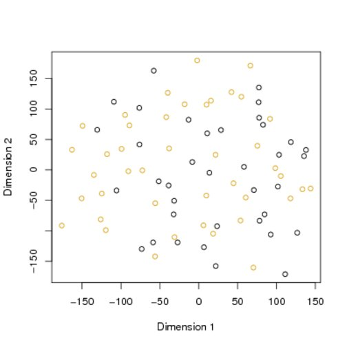

Figure 10.2:
The two-dimensional projection of the between-sample distance s obtained using Sammon mapping . Samples with the BCR/ABL phenotype are indicated with dark circles, and those with the NEG phenotype by light circles.